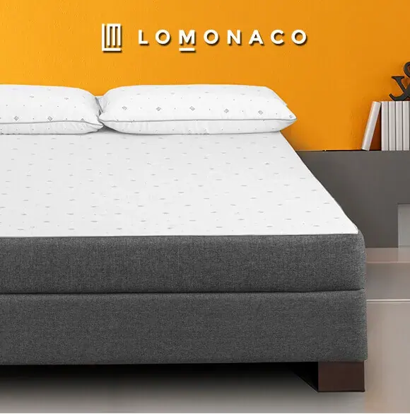
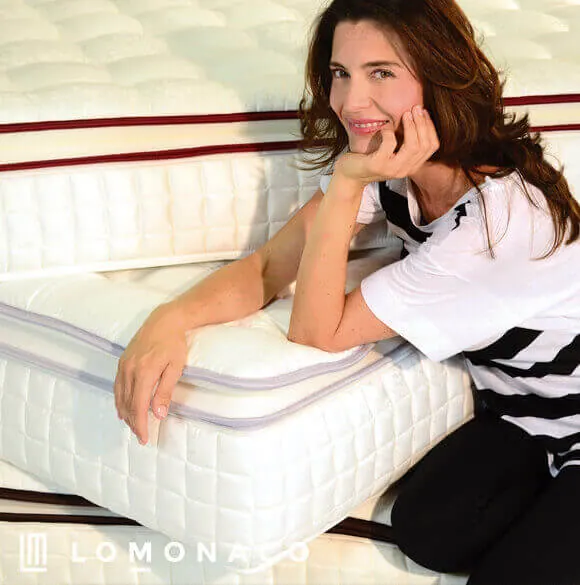
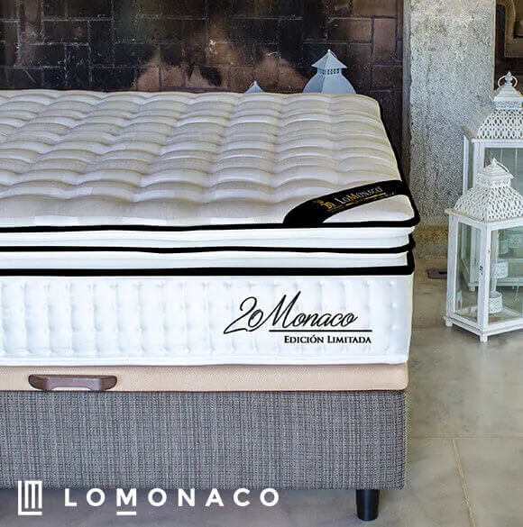
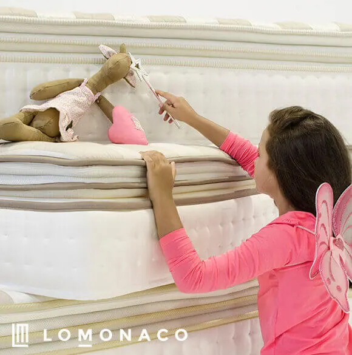
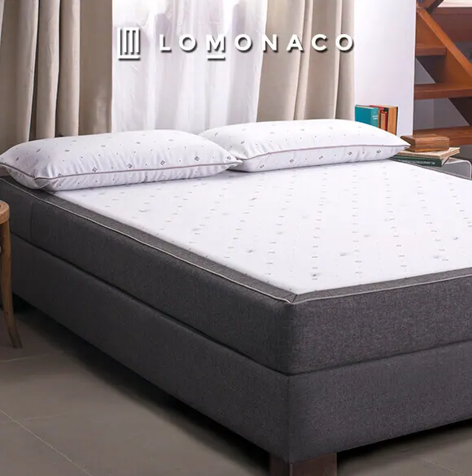
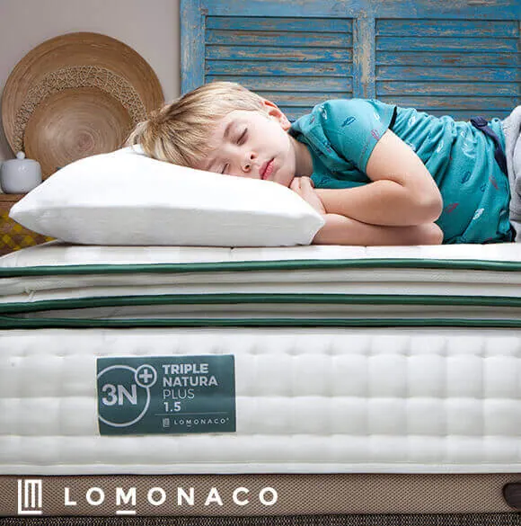

COMPRAR COLCHONES EN OUTLET

COMPRAR COLCHONES EN OUTLET
Invertir en descanso es invertir en salud, por eso en Grupo Lo Monaco siempre hemos ofrecido una amplia oferta, un catálogo plagado de productos fabricados bajo el paraguas de la innovación, siempre con la mejor relación calidad precio. Desde el principio, apostamos por los colchones de látex, un material casi desconocido en nuestro país para fabricar colchones.
Con el engranaje de la innovación puesto en marcha, es necesario una tienda de colchones Outlet porque el vertiginoso mercado del descanso así lo requiere. En las ofertas de colchones Lo Mónaco, continuamos siempre ampliando gama y materiales a colchones viscoelásticos, espumaciones técnicas High Resilience y muelles de última generación, por diferentes motivos (y por qué no solo de colchones de látex vive el sueño). Por un lado, dentro de la amplia concepción de “colchones de firmeza media”, necesitábamos ofrecer a nuestros clientes la opción de disfrutar de ingravidez que solo los colchones viscoelásticos pueden ofrecer, o un soporte y acogida más firme, que demandaban las “espaldas” acostumbradas a los colchones de muelles de toda la vida.
Por otro lado, es de obligado cumplimiento, como expertos en descanso, testar materiales para conocer cuáles son los que ofrecen el mejor descanso.
Y tras toda esta andadura en la senda de la investigación y el desarrollo, llegó el CRIOLÁTEX® del revolucionario Colchón CRIOLÁTEX® ECO10®, un desarrollo propio de LoMonaco, en el que se consiguió evolucionar el material de los tradicionales colchones de látex. Así, este nuevo material proporciona una adaptabilidad perfecta, una firmeza media real y un soporte progresivo punto a punto cuando estamos durmiendo. Además, este colchón de látex evolucionado proporciona una temperatura, transpirabilidad y suavidad únicas.
Con este escenario, con todos estos colchones (látex, viscoelástica, muelles, HR) ¿por qué no seguir ofreciendo productos de Lo Monaco rebajados a un precio inmejorable y con la calidad que sólo nosotros podemos ofrecerte? Visita el Outlet de Lo Monaco, ahora con precios aún más baratos y con un catálogo ampliado. ¡Visita el Outlet del descanso!

¿Son los colchones baratos una solución de descanso?
Ser un colchón “low cost”, no significa que se hayan utilizado materias primas de baja calidad. En el caso del Outlet de comprar outlet Lo Mónaco, la oferta de colchones está compuesta por colchones descatalogados, pero eso no le resta prestigio. Y es que, en determinadas ocasiones, ser un colchón barato no está reñido con ser un colchón de calidad. Concretamente, el catálogo de productos del Outlet de Lo Monaco, cuentan con una serie de reconocimientos que acreditan su excelencia.
Calidad al mejor precio: outlet de colchones con descuentos y muchos más
¡En este apartado de nuestra web encontrarás colchones rebajados y equipos de descanso a precios muy reducidos! Y es que en el Outlet de colchones Lo Monaco, podrás disfrutar de suculentos descuentos en colchones, buenas almohadas de látex económicas, ofertas en ropa de cama y canapés baratos, pudiendo encontrar productos hasta un 60% más baratos.

¿Aún no has visitado nuestro apartado de Colchones Outlet Online?
Compraste un colchón de Lo Monaco en el año 2015, que te está dando interminables horas de buen sueño, resulta que quieres comprar uno igual y además si puedes comprar online colchones outlet, mejor. Abres la web de Lo Mónaco, pero sorpresa… el producto no aparece ya, se ha cambiado todo el catálogo y por cambiar… ¡hemos cambiado hasta de logo! ¿Has probado a echar un vistazo a ver si lo encuentras en el apartado de outlet de Lo Monaco?
Ampliamos nuestro outlet: colchones a mitad de precio
Visita periódicamente el apartado “Outlet” o también llamado “Ofertas“ de nuestra tienda online para estar al día si incluimos nuevos artículos al stockaje, o si hemos bajado aún más los precios. Y un consejo, no esperes a última hora para comprar, ya que las existencias son limitadas ¡no te quedes sin el colchón de tus sueños!

Certificados de calidad de productos y colchones Lo Monaco
Öeko-Tex Eco Standar 100: este certificado textil, asegura que las materias primas utilizadas para la fabricación de los productos están fuera de sustancias nocivas.
Eurolátex Eco Standard: el núcleo de látex del colchón LoMonaco está garantizado por este distintivo, certificado que marca el máximo permitido de sustancias nocivas que pueden hallarse en el látex. La validez del Eurolatex Eco Estándar, ha sido reconocida por la Unión Europea que la incluyó en la norma 2002/740/CE, donde se establecen los criterios para la obtención de la “etiqueta ecológica en colchones”.
LGA Durability & Resilience: los núcleos de los colchones obtuvieron este certificado que garantiza la durabilidad de los productos.
Sanitized®: El Cubre Colchón Impermeable Natura y el Cubre almohada Impermeable Natura, incorporan el tratamiento Sanitized®, que garantiza la protección de los textiles utilizados frente a la proliferación de colonias de ácaros, bacterias y hongos.
Certipur®: la gama de colchones viscoelásticos Lo Monaco, está certificada con el prestigioso sello Certipur® de la European Association of Flexible Polyurethane foam Blocks Manufacturers, por prescindir de sustancias nocivas para la salud y el medio ambiente en todo su proceso de fabricación.

Woolmark Company®: el Cubre Colchón de Lana Merina, el Cubre Almohada de Lana Merina, la Manta de Lana Merina Lujo y la Manta de Lana Merina Básica, están elaborados con pura lana virgen avalada por la mundialmente conocida Woolmark Company®.
Además, la gama de colchones de látex 1.8 3N+ de Grupo Lo Monaco, han sido calificados como “sumamente cómodos”, con la que el Instituto Tecnológico del Mueble, Madera, Embalaje y Afines (AIDIMA), sitúa en el rango más alto de confort a esta línea de producto.
Por otro lado, el Colchón CRIOLÁTEX® ECO10® de LoMonaco, fue elegido el mejor colchón de 2018, por la OCU en el ranking “Compra Maestra” que se elabora para ayudar a los consumidores a elegir los mejores productos del mercado.
Además, el Colchón Triple Grafeno, supuso un gran avance en el mundo del descanso. Este producto surge gracias al trabajo continuado en innovación por el que apostamos siempre en nuestra organización, para así lograr además nuestro objetivo principal.
